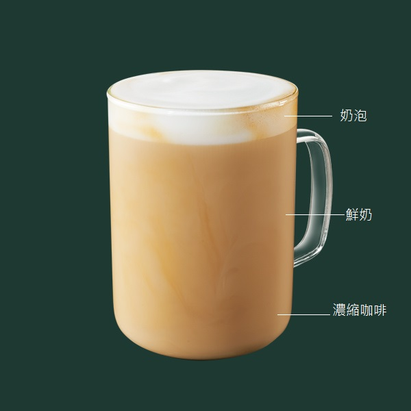

Caffe Latte 拿鐵咖啡
由濃縮咖啡融合新鮮的鮮奶，並加入些許奶泡。它與卡布奇諾相比，有更多鮮奶味道。義大利語latte僅有奶的意思，而非義大利語使用者常簡稱latte，泛指由熱鮮奶所沖泡的飲品。
咖啡拉花：將鮮奶倒咖啡杯時，咖啡師透過手腕些微的動作便能於杯中畫出圖案，這成為了一種藝術。假設假設假設假設假設假設假設假設假設假設假設假設假設假設假設假設假設假設假設
咖啡拉花：將鮮奶倒咖啡杯時，咖啡師透過手腕些微的動作便能於杯中畫出圖案，這成為了一種藝術。假設假設假設假設假設假設假設假設假設假設假設假設假設假設假設假設假設假設假設